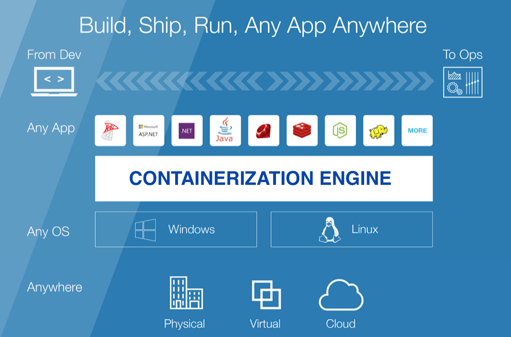

Containerization
What is containerization?
Containerization has become a major trend in software development as an alternative or companion to virtualization. It involves encapsulating or packaging up software code and all its dependencies so that it can run uniformly and consistently on any infrastructure. The technology is quickly maturing, resulting in measurable benefits for developers and operations teams as well as overall software infrastructure.
Containerization allows developers to create and deploy applications faster and more securely. With traditional methods, code is developed in a specific computing environment which, when transferred to a new location, often results in bugs and errors. For example, when a developer transfers code from a desktop computer to a virtual machine (VM) or from a Linux to a Windows operating system. Containerization eliminates this problem by bundling the application code together with the related configuration files, libraries, and dependencies required for it to run. This single package of software or “container” is abstracted away from the host operating system, and hence, it stands alone and becomes portable—able to run across any platform or cloud, free of issues.
The concept of containerization and process isolation is decades old, but the emergence of the open source Docker Engine in 2013, an industry standard for containers with simple developer tools and a universal packaging approach, accelerated the adoption of this technology. Research firm Gartner projects that more than 50% of companies will use container technology by 2020. And results from a late 2017 survey conducted by IBM suggest that adoption is happening even faster, revealing that 59% of adopters improved application quality and reduced defects as a result.
Containers are often referred to as “lightweight,” meaning they share the machine’s operating system kernel and do not require the overhead of associating an operating system within each application. Containers are inherently smaller in capacity than a VM and require less start-up time, allowing far more containers to run on the same compute capacity as a single VM. This drives higher server efficiencies and, in turn, reduces server and licensing costs.
Put simply, containerization allows applications to be “written once and run anywhere.” This portability is important in terms of the development process and vendor compatibility. It also offers other notable benefits, like fault isolation, ease of management and security, to name a few. Click here to learn more about the benefits of containerization.

Application containerization
Containers encapsulate an application as a single executable package of software that bundles application code together with all of the related configuration files, libraries, and dependencies required for it to run. Containerized applications are “isolated” in that they do not bundle in a copy of the operating system. Instead, an open source runtime engine (such as the Docker runtime engine) is installed on the host’s operating system and becomes the conduit for containers to share an operating system with other containers on the same computing system.
Other container layers, like common bins and libraries, can also be shared among multiple containers. This eliminates the overhead of running an operating system within each application and makes containers smaller in capacity and faster to start up, driving higher server efficiencies. The isolation of applications as containers also reduces the chance that malicious code present in one container will impact other containers or invade the host system.
The abstraction from the host operating system makes containerized applications portable and able to run uniformly and consistently across any platform or cloud. Containers can be easily transported from a desktop computer to a virtual machine (VM) or from a Linux to a Windows operating system, and they will run consistently on virtualized infrastructures or on traditional “bare metal” servers, either on-premise or in the cloud. This ensures that software developers can continue using the tools and processes they are most comfortable with.
One can see why enterprises are rapidly adopting containerization as a superior approach to application development and management. Containerization allows developers to create and deploy applications faster and more securely, whether the application is a traditional monolith (a single-tiered software application) or a modular microservice (a collection of loosely coupled services). New cloud-based applications can be built from the ground up as containerized microservices, breaking a complex application into a series of smaller specialized and manageable services. Existing applications can be repackaged into containers (or containerized microservices) that use compute resources more efficiently.
Benefits
Containerization offers significant benefits to developers and development teams. Among these are the following:
Portability: A container creates an executable package of software that is abstracted away from (not tied to or dependent upon) the host operating system, and hence, is portable and able to run uniformly and consistently across any platform or cloud.
Agility: The open source Docker Engine for running containers started the industry standard for containers with simple developer tools and a universal packaging approach that works on both Linux and Windows operating systems. The container ecosystem has shifted to engines managed by the Open Container Initiative (OCI). Software developers can continue using agile or DevOps tools and processes for rapid application development and enhancement.
Speed: Containers are often referred to as “lightweight,” meaning they share the machine’s operating system (OS) kernel and are not bogged down with this extra overhead. Not only does this drive higher server efficiencies, it also reduces server and licensing costs while speeding up start-times as there is no operating system to boot.
Fault isolation: Each containerized application is isolated and operates independently of others. The failure of one container does not affect the continued operation of any other containers. Development teams can identify and correct any technical issues within one container without any downtime in other containers. Also, the container engine can leverage any OS security isolation techniques—such as SELinux access control—to isolate faults within containers.
Efficiency: Software running in containerized environments shares the machine’s OS kernel, and application layers within a container can be shared across containers. Thus, containers are inherently smaller in capacity than a VM and require less start-up time, allowing far more containers to run on the same compute capacity as a single VM. This drives higher server efficiencies, reducing server and licensing costs.
Ease of management: A container orchestration platform automates the installation, scaling, and management of containerized workloads and services. Container orchestration platforms can ease management tasks such as scaling containerized apps, rolling out new versions of apps, and providing monitoring, logging and debugging, among other functions. Kubernetes, perhaps the most popular container orchestration system available, is an open source technology (originally open-sourced by Google, based on their internal project called Borg) that automates Linux container functions originally. Kubernetes works with many container engines, such as Docker, but it also works with any container system that conforms to the Open Container Initiative (OCI) standards for container image formats and runtimes.
Security: The isolation of applications as containers inherently prevents the invasion of malicious code from affecting other containers or the host system. Additionally, security permissions can be defined to automatically block unwanted components from entering containers or limit communications with unnecessary resources.
Types
The rapid growth in interest and usage of container-based solutions has led to the need for standards around container technology and the approach to packaging software code. The Open Container Initiative (OCI), established in June 2015 by Docker and other industry leaders, is promoting common, minimal, open standards and specifications around container technology. Because of this, the OCI is helping to broaden the choices for open source engines. Users will not be locked into a particular vendor’s technology, but rather they will be able to take advantage of OCI-certified technologies that allow them to build containerized applications using a diverse set of DevOps tools and run these consistently on the infrastructure(s) of their choosing.
Today, Docker is one of the most well-known and highly used container engine technologies, but it is not the only option available. The ecosystem is standardizing on containerd and other alternatives like CoreOS rkt, Mesos Containerizer, LXC Linux Containers, OpenVZ, and crio-d. Features and defaults may differ, but adopting and leveraging OCI specifications as these evolve will ensure that solutions are vendor-neutral, certified to run on multiple operating systems and usable in multiple environments.
Security
can operate independently of other containers. Truly isolated, this could prevent any malicious code from affecting other containers or invading the host system. However, application layers within a container are often shared across containers. In terms of resource efficiency, this is a plus, but it also opens the door to interference and security breaches across containers. The same could be said of the shared Operating System since multiple containers can be associated with the same host Operating System. Security threats to the common Operating System can impact all of the associated containers, and conversely, a container breach can potentially invade the host Operating System.
But, what about the container image itself? How can the applications and open source components packaged within a container improve security? Container technology providers, such as Docker, continue to actively address container security challenges. Containerization has taken a “secure-by-default” approach, believing that security should be inherent in the platform and not a separately deployed and configured solution. To this end, the container engine supports all of the default isolation properties inherent in the underlying operating system. Security permissions can be defined to automatically block unwanted components from entering containers or to limit communications with unnecessary resources.
For example, Linux Namespaces helps to provide an isolated view of the system to each container; this includes networking, mount points, process IDs, user IDs, inter-process communication, and hostname settings. Namespaces can be used to limit access to any of those resources through processes within each container. Typically, subsystems which do not have Namespace support are not accessible from within a container. Administrators can easily create and manage these “isolation constraints” on each containerized application through a simple user interface.
Researchers are working to further strengthen Linux container security, and a wide range of security solutions are available to automate threat detection and response across an enterprise, to monitor and enforce compliance to meet industry standards and security policies, to ensure the secure flow of data through applications and endpoints, and much more.